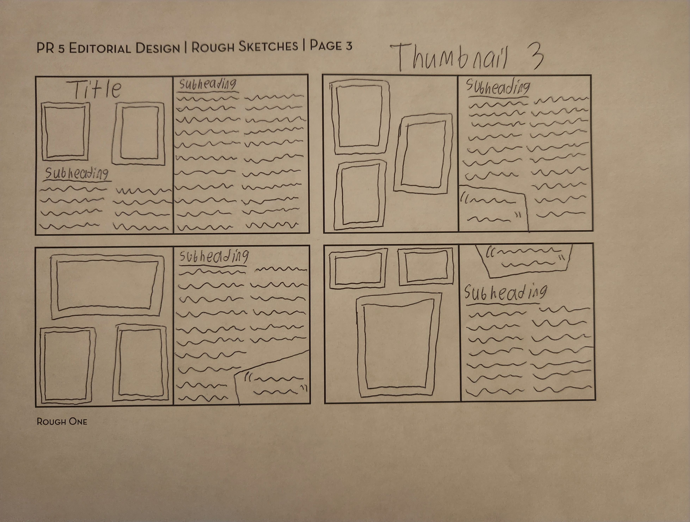
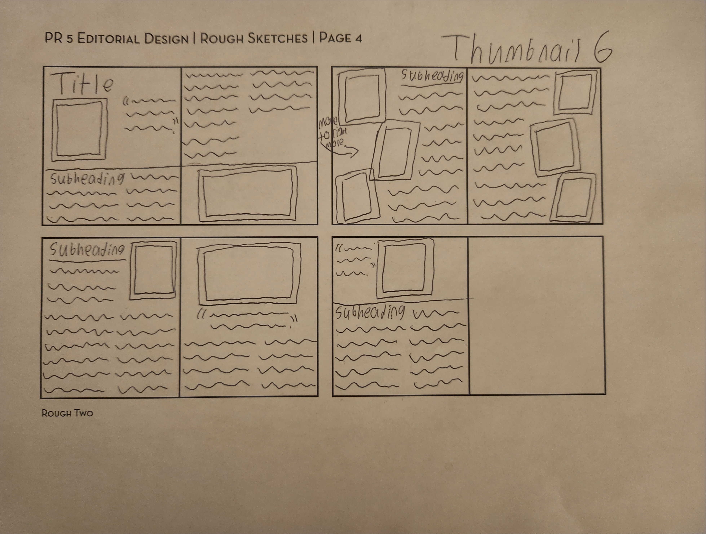

Process
Take a look at some of the preparation work that helped me realize the foundation of my design!




The goal for this piece was to create a theoretical design for a feature article in the Veer Magazine. I went for a scrapbook theme that represented Jenks’ free spirited personality, while also showcasing the professionalism of her photography work.
Context: Typography I Project
Software: Adobe InDesign
Time Spent: 3-4 Weeks
Typeface: Study (Regular, Bold, Light Italic), Cooper Black
Size: 9 in x 10.5 in pages
Take a look at some of the preparation work that helped me realize the foundation of my design!